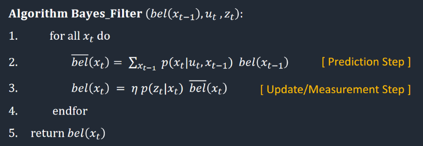
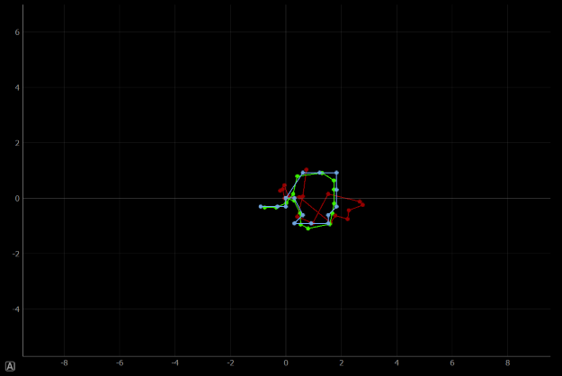
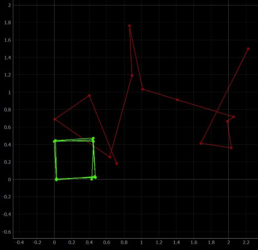

The purpose of this lab is to simulate grid localization using the simulator from lab 10. The grid localization is done using a bayes filter.
The algorithm used to implement the filter can be seen below:

The point of this algorithm is to calculate the probability that you are in a specific position, given a previous position and an input to move the robot.
This algorithm is extremely computationally expensive, as you must do this calculation for virtually every possible location and orientation your robot could have been.
Setup
The only setup for this lab was to download a given python notebook. This notebook contains skeleton code for our bayes filter.
Lab Sections
Part 1: Implementation:
The lab was implemented by follow the skeleton code provided. This code is broken up into five functions:
compute_control(cur_pose, prev_pose) odom_motion_model(cur_pose, prev_pose, u) prediction_step(cur_odom, prev_odom) sensor_model(obs) update_step()
As can be seen, two of these functions are the prediction and update steps shown in the bayes algorithm above. The compute_control(cur_pose, prev_pose) function is used to compute the
rotations and translations of the robot, and is done using the following code:
The next function odom_motion_model(cur_pose, prev_pose, u) is used to find the probability that we ended up in a certain position after applying a control input. This probability is found using
a gaussian distribution in the code below:
The prediction_step(cur_odom, prev_odom) is the most compicated function. This function iterates through every possible position the robot could have been to predict where the robot is now. This
function is mainly why a bayes filter is so slow. An alternative to this could have been to use a particle filter, doing so would have sped up the prediction. However, the bayes filter is the basis of probabilistic robots like these,
and is worthwhile to learn before using other methods. The code used for the prediction step can be seen below:
loc.bel
u = compute_control(cur_odom, prev_odom)
loc.bel_bar = np.zeros_like(loc.bel_bar)
# Pseudocode:
# Loop over every bel(x). If bel(X) is zero, skip. Else, perform bel_bar update for all cells with bel(X). Repeat over all bel_X
for ix in range(mapper.MAX_CELLS_X):
for iy in range(mapper.MAX_CELLS_Y):
for itheta in range(mapper.MAX_CELLS_A):
# IF BEL IS GREATER THAN ZERO START SUMMING
if loc.bel[ix, iy, itheta] > 0.0001:
# If bel is greater than 0, than perform all updates. Else pass.
for ix_bar in range(mapper.MAX_CELLS_X):
for iy_bar in range(mapper.MAX_CELLS_Y):
for itheta_bar in range(mapper.MAX_CELLS_A):
# UPDATE ALL CELLS IN CURRENT STATE
curr_pose = mapper.from_map(ix, iy, itheta)
loc.bel_bar[ix_bar, iy_bar, itheta_bar] += (loc.bel[ix, iy, itheta])*odom_motion_model(mapper.from_map(ix_bar, iy_bar, itheta_bar), mapper.from_map(ix, iy, itheta), u)
else:
pass
# Normalize your bel_bar matrix
loc.bel_bar = loc.bel_bar / np.sum(loc.bel_bar)
The next function is sensor_model(obs). Since we cannot trust our sensors completely, we will also take into account the probability that the sensor reading we have is correct using the current orientation of the robot.
This funtion is much simpler than the previous one, and can be seen below:
views = mapper.get_views(obs[0], obs[1], obs[2])
prob_array = np.zeros(18)
for i, ob in enumerate(loc.obs_range_data[:,0]):
prob_array[i] = loc.gaussian(views[i], ob, loc.sensor_sigma)
return prob_array
Lastly, the update step of the algorithm. The name of this step is somewhat self explanitory. It is used to update the our belief for each position of the robot.
for ix in range(mapper.MAX_CELLS_X):
for iy in range(mapper.MAX_CELLS_Y):
for itheta in range(mapper.MAX_CELLS_A):
#######################################
pz = sensor_model(np.array([ix, iy, itheta]))
loc.bel[ix, iy, itheta] = np.prod(pz)*loc.bel_bar[ix, iy, itheta]
loc.bel = loc.bel / np.sum(loc.bel)
Part 2: Outcome
We can now see the outcome of the algorithm implemented. Below is a graph of the robot preforming this algorithm. The odometer readings are in red, the belief is in blue, and the ground truth in green.

As can be seen, the ground truth and belief are very close to each other. The odometer is a bit off, but this is because the real one is extremely noise, and this noise is added to the simulation. Despite being off,
it is still a significant improvement compared to the previous odometer reading from lab 10, which can be seen below.

Lastly, here is a video to show the simulation in action.